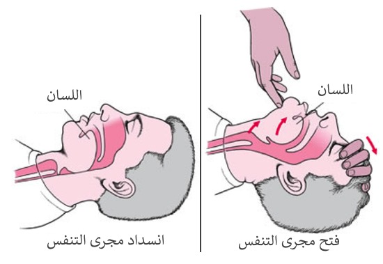
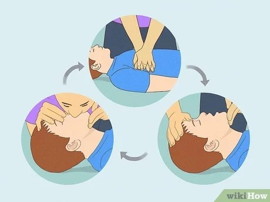

هو أحد الأساليب المنقذة للحياة التي تفيد في العديد من الحالات الطارئة التي يتوقف فيها تنفس المصاب أو نبضه.
أولا: تأكد من انك أنت و المصاب غير معرضين لأي خطر -
ثانيا: حاول التحدث مع المصاب -
ثالثا: اطلب المساعده -
:رابعا: افتح مجرى الهواء إذا كان المصاب فاقداً الوعي -
تخلص من الأجسام الغريبة في الفم والبلعوم وأزل الملابس الضاغطة *
ارجع الرأس للخلف و أسحب الذقن للأمام *

خامسا: افحص التنفس ( انظر، اسمع، تحسس ) -
سادسا: إذا لم يكن يتنفس ابدأ عملية التنفس الصناعي ( من الفم إلىً الفم) -
أغلق انف المصاب. خذ شهيقا عميقا. ضع فمك على فم المصاب بحيث يدور حوله ويغلقه تماما. ثم أعط دفعتين من الهواء
افحص نبض المصاب *
إذا كان قلب المصاب ينبض استمر بإعطاء التنفس *

سابعا: إذا لم يكن هناك نبض ابدأ بعملية الضغط الخارجي على الصدر يوضع المريض مستلقيا على ظهره على سطح صلب ويكون مكان الضغط في الموقع الصحيح -
(وضع اليدين بين حلمتي صدر المصاب)
:دورات تتكون من
ثلاتين ضغطة ونفسين -
بعد خمس دورات متواصلة (2) دقيقة أفحص المصاب -
ثامنا: يوضع المصاب وضعية الإفاقة بحيث يكون علي جنبه وفمه باتجاه الأسفل حتى لا يسمح للقيء بالتراكم في فمه ومسالكة التنفسية، ويسحب لسانه للأمام حتى لا يغلق الحلقه
تاسعا: يمنع إعطاء المصاب ( فاقد الوعي) أي شيء عن طريق الفم
الإنعاش القلبي الرئوي للاطفال (8-1) سنوات
:يختلف في الخطوات التالية
أولا: يجب البدء بالأنعاش القلبي الرئوي بأسرع وقت ممكن حتى قبل الشروع في طلب الخدمات الأسعافية